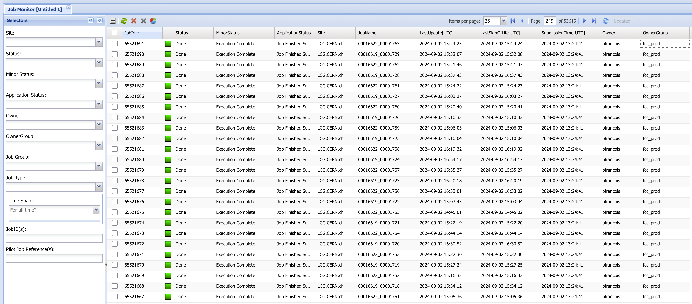

5.2. Getting started with FCC distributed computing¶
Page contributors
Gerardo Ganis, Juraj Smiesko, Brieuc Francois
For more detailed documentation how user’s can use the distributed resources managed by iLCDirac, refer to the iLCDirac’s User Guide.
5.2.1. Registering to the FCC VO¶
The standard Grid VO registration procedure should be followed to be able to use the resources connected with the FCC Virtual Organization (VO). If your request is pending approval for too long, please contact us.
Note
As for the VO registration, you need to use a browser where you can import your GRID certificate together with the CERN CA certificates. Firefox usually works fine, Google Chrome usually does not work. Safari might also work.
5.2.2. Enabling DIRAC¶
DIRAC is available on CernVM-FS. To enable the relevant applications and scripts, the following setup script needs first to be sourced
source /cvmfs/clicdp.cern.ch/DIRAC/bashrc
To submit jobs through DIRAC a proxy needs to be created and uploaded:
dirac-proxy-init -g fcc_user
A successful creation looks like this:
Generating proxy...
Enter Certificate password:
Added VOMS attribute /fcc
Uploading proxy..
Proxy generated:
subject : /DC=ch/DC=cern/OU=Organic Units/OU=Users/CN=ganis/CN=393971/CN=Gerardo Ganis/CN=2178341058/CN=3000266373
issuer : /DC=ch/DC=cern/OU=Organic Units/OU=Users/CN=ganis/CN=393971/CN=Gerardo Ganis/CN=2178341058
identity : /DC=ch/DC=cern/OU=Organic Units/OU=Users/CN=ganis/CN=393971/CN=Gerardo Ganis
timeleft : 23:53:58
DIRAC group : fcc_user
path : /tmp/x509up_u2759
username : ganis
properties : NormalUser
VOMS : True
VOMS fqan : ['/fcc']
Proxies uploaded:
DN | Group | Until (GMT)
/DC=ch/DC=cern/OU=Organic Units/OU=Users/CN=ganis/CN=393971/CN=Gerardo Ganis | | 2022/05/13 12:12
The last section shows the valid proxies upload to the DIRAC system. It can also be checked with
dirac-proxy-info -m
with output similar to
subject : /DC=ch/DC=cern/OU=Organic Units/OU=Users/CN=ganis/CN=393971/CN=Gerardo Ganis/CN=2178341058/CN=3000266373
issuer : /DC=ch/DC=cern/OU=Organic Units/OU=Users/CN=ganis/CN=393971/CN=Gerardo Ganis/CN=2178341058
identity : /DC=ch/DC=cern/OU=Organic Units/OU=Users/CN=ganis/CN=393971/CN=Gerardo Ganis
timeleft : 23:50:40
DIRAC group : fcc_user
path : /tmp/x509up_u2759
username : ganis
properties : NormalUser
VOMS : True
VOMS fqan : ['/fcc']
== Proxies uploaded ==
DN | Group | Until (GMT)
/DC=ch/DC=cern/OU=Organic Units/OU=Users/CN=ganis/CN=393971/CN=Gerardo Ganis | | 2022/05/13 12:12
If everything worked fine, your proxy should be mapped to the fcc001 user. This can be checked this way:
export EOS_MGM_URL=root://eospublic.cern.ch
XrdSecPROTOCOL=gsi,unix eos whoami
the result should look similar to this:
Virtual Identity: uid=140035 (99,140035) gid=2855 (99,2855) [authz:gsi] host=lxplus743.cern.ch domain=cern.ch geo-location=0513
At CERN the uid of fcc001 is 140035.
5.2.3. Copying, browsing, accessing files¶
Once DIRAC is enabled it is possible to copy, browse and access files.
For the example we used the file edm4hep_test_output.root .
Files can be copied in the area of each user with, for example, xrdcp:
xrdcp edm4hep_test_output.root root://eospublic.cern.ch//eos/experiment/fcc/user/g/ganis/edm4hep_test_output.root
[5B/5B][100%][==================================================][5B/s]
The immediate availability of the file can be checked with
$ xrdfs eospublic.cern.ch ls /eos/experiment/fcc/prod/fcc/user/g/ganis
/eos/experiment/fcc/prod/fcc/user/g/ganis/edm4hep_test_output.root
or, /eos is mounted, with
$ ls -lt /eos/experiment/fcc/prod/fcc/user/g/ganis
total 9545
-rw-r--r--. 1 fcc001 fcc-cg 9768981 Nov 3 2021 edm4hep_test_output.root
Files can be replicated to another Storage Element, e.g. CNAF-DISK, using
dirac-dms-replicate-lfn:
$ dirac-dms-replicate-lfn /fcc/user/g/ganis/edm4hep_test_output.root CNAF-DISK
The availability of the files can be browsed using the command dirac-dms-lfn-replicas:
$ dirac-dms-lfn-replicas /fcc/user/g/ganis/edm4hep_test_output.root
LFN StorageElement URL
=============================================================
/fcc/user/g/ganis/edm4hep_test_output.root CNAF-DISK davs://xfer-archive.cr.cnaf.infn.it:8443/fcc/user/g/ganis/edm4hep_test_output.root
CERN-DST-EOS gsiftp://eospublicftp.cern.ch//eos/experiment/fcc/prod/fcc/user/g/ganis/edm4hep_test_output.root
The file can be accessed through the indicate path; for example:
$ source /cvmfs/sw.hsf.org/key4hep/setup.sh
$ root -l
root [0] TFile *f1 = TFile::Open(“davs://xfer-archive.cr.cnaf.infn.it:8443/fcc/user/g/ganis/edm4hep_test_output.root”)
(TFile *) 0x2ec28b0
root [1]
5.2.4. The web portal¶
The DIRAC web portal is available to check the status of things. It shows all the jobs submitted and the files registered. An example screenshot is shown below.
